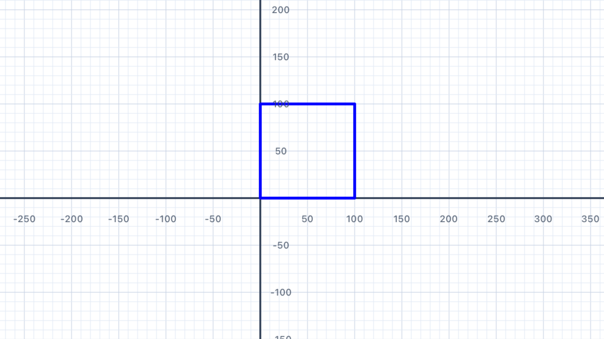
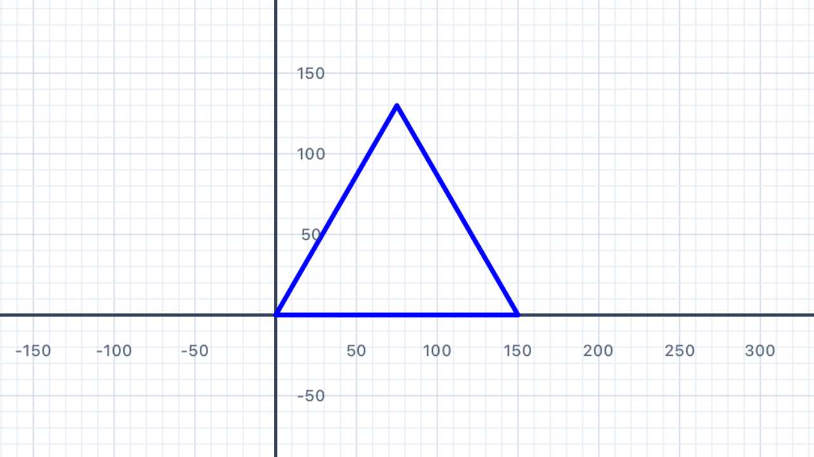
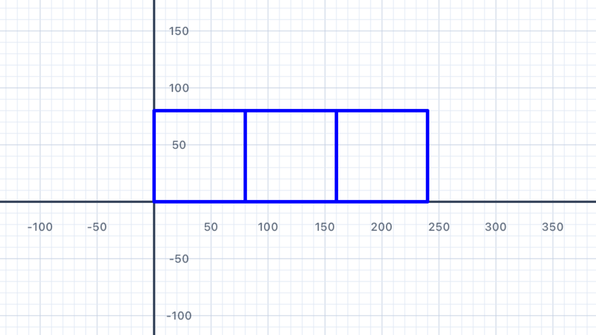
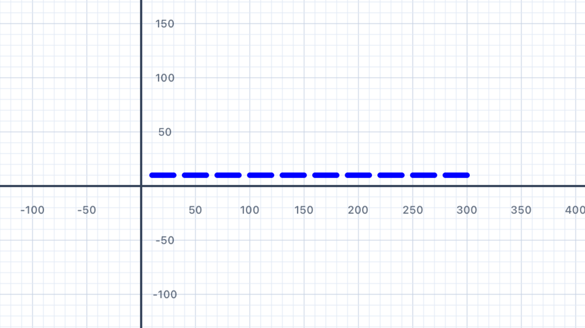
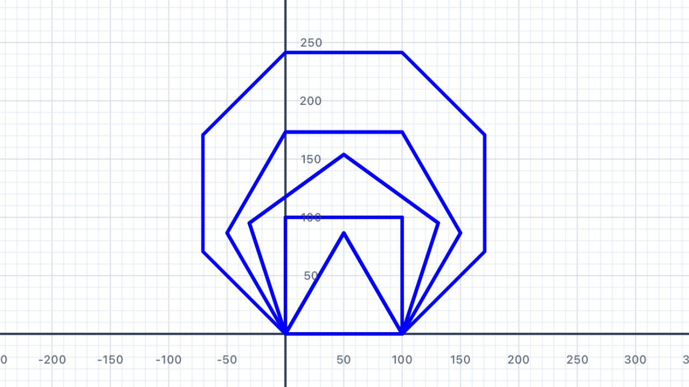
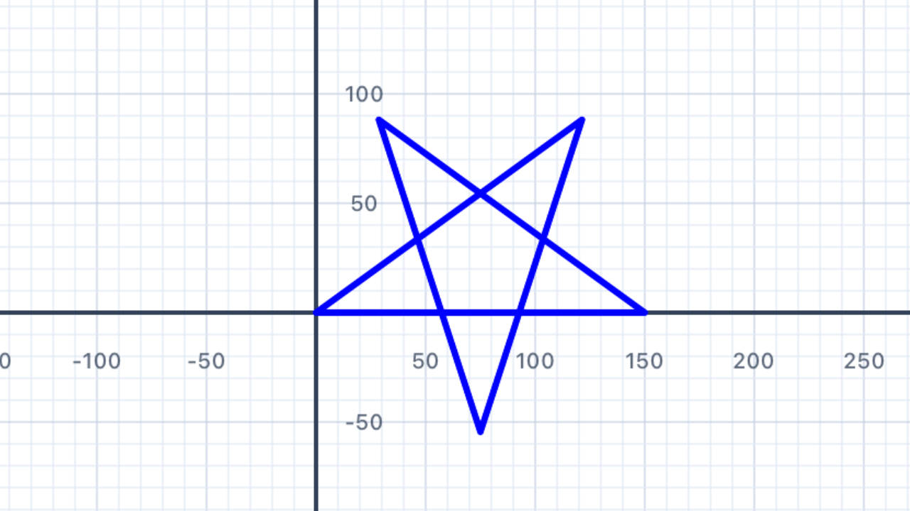
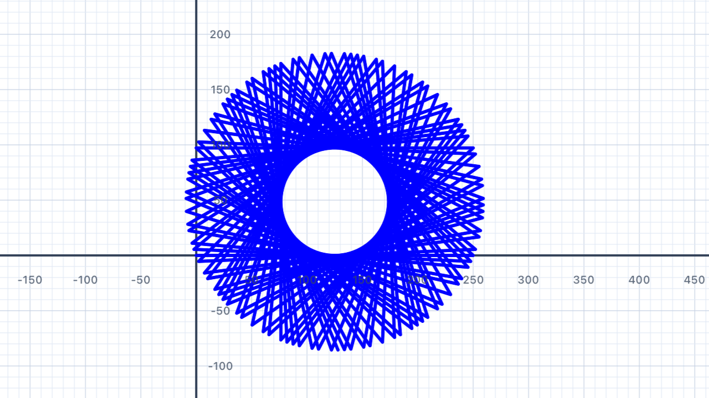
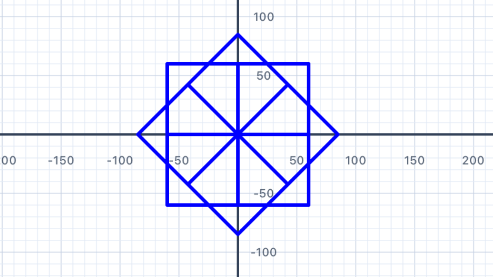
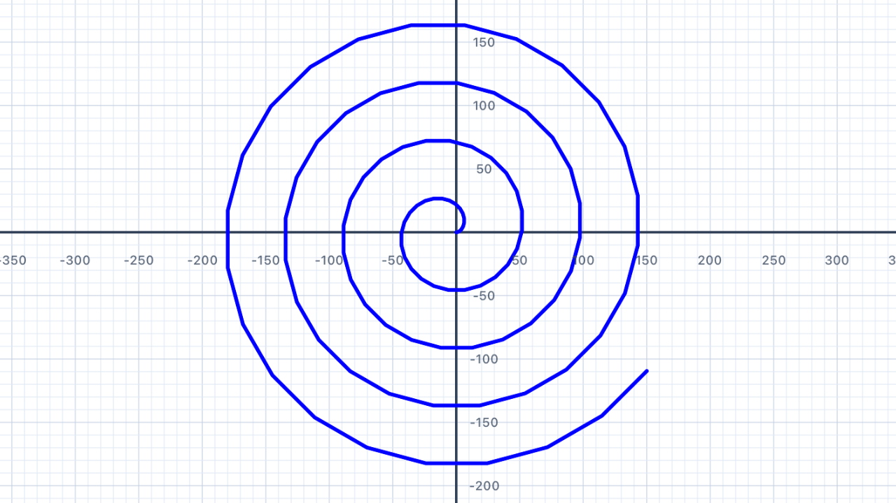

Our First Loop
So far you've been writing each addLine and turn call one at a time. When a shape has many sides, that gets repetitive fast. Swift's for loop lets you run the same block of code a set number of times — and as a bonus, it makes your code easier to read and change.
Here's the basic syntax:
for i in 1...4 { // this block runs 4 times (i = 1, 2, 3, 4) pen.addLine(distance: 100) pen.turn(degrees: 90) }
The 1...4 is a closed range — it includes both 1 and 4. You can use any range you like. If you don't need the loop variable i, Swift convention is to replace it with _ (underscore), which tells the reader "we're just counting, the value doesn't matter":
for _ in 1...4 { pen.addLine(distance: 100) pen.turn(degrees: 90) }
This draws a square in just 4 lines instead of 8! Let's put loops to work on real shapes.
Why loops? Three reasons: less typing (4 lines instead of 8 for a square, and the savings grow with bigger shapes), fewer bugs (if you update the side length, you only change one number), and scalability (a 100-sided polygon is just as easy as a 4-sided one — change the count and you're done). Loops are the foundation of every non-trivial program.
Closed range vs half-open. Swift has two range operators:1...4is the closed range (includes both 1 and 4, so 4 values: 1, 2, 3, 4).0..<4is the half-open range (includes 0 but stops before 4, so 4 values: 0, 1, 2, 3). Both loop exactly 4 times — they just use different starting points. For counting iterations, either works; pick whichever reads more naturally.
The underscore says "I don't care". Writingfor i in 1...4creates a variable calledithat takes on the values 1, 2, 3, 4 in turn. If you actually useiinside the loop, keep the name. But if you're just repeating the same code 4 times (like drawing a square), replaceiwith_. It tells anyone reading your code "this value is intentionally ignored". You'll seeiused for real in Section 09 when you draw a spiral.

| Standard | Connection |
|---|---|
| Expressions & Equations | Loops introduce the idea of repeated operations — a foundation for understanding iterative processes, arithmetic sequences, and summations (Σ notation). Each iteration is one "step" of a discrete sequence, and the loop variable i is the sequence index. |
Triangle
An equilateral triangle has 3 equal sides and 3 equal angles. Each exterior angle is 120°. Use a for loop to draw one — just three lines of code.
If you walked around the triangle. Imagine you're standing at one corner, facing along one side. You walk forward, and at each corner you need to turn to face the next side. Because the triangle closes (you end up back where you started facing the direction you started), your total turning must equal exactly 360° — one full rotation. Share that 360° equally among the 3 corners and each turn is360° ÷ 3 = 120°. This is the exterior angle, and it's what you pass topen.turn().
Exterior vs interior angle. The interior angle is the angle inside the corner — for an equilateral triangle it's 60°. The exterior angle is how much you rotate when you turn the corner — 120° for an equilateral triangle. They're always supplementary: interior + exterior = 180° (because together they make a straight line). Your pen turns by the exterior angle, never the interior angle. Getting this backwards is the single most common mistake when drawing polygons.

for _ in 1...3 { pen.addLine(distance: 150) pen.turn(degrees: 120) }
Three turns add to 360°. Three iterations ofturn(degrees: 120)rotate the pen by3 × 120° = 360°total — one complete rotation, landing back at its original heading. This matches the walking intuition above and is your sanity check for any regular polygon:number of sides × exterior angle = 360°for the shape to close.
| Standard | Connection |
|---|---|
| Geometry — Triangles | Equilateral triangles have three 60° interior angles and three 120° exterior angles. Interior + exterior = 180° at every vertex (supplementary angles). The sum of exterior angles of any convex polygon is always 360° — a theorem that underlies every regular polygon formula you'll see in this chapter. |
Squares
Draw a row of three squares side by side using a loop. Each square should have sides of length 80. Use move to reposition the pen without drawing between squares.
Hint: after drawing each square, you'll need to move the pen (without drawing a line) to the starting corner of the next square.
movevsaddLine. Both advance the pen forward by a distance, but onlyaddLinedraws a visible line —moveis silent. UseaddLinewhen you want to draw; usemovewhen you want to reposition the pen without leaving a trace. You'll need both in any exercise where you draw multiple separate shapes in one script.
Closed shapes return the pen home. A square's 4 turns add to4 × 90° = 360°— a full rotation. Combined with 4 equal sides, the pen ends exactly where it started, facing the direction it started. This is why you can draw a square, thenmoveforward, then draw another square: after the first square, the pen is at the bottom-left corner again (its starting point), facing right. Themove(distance: 80)then slides it past the first square to the start of the next.
Nested loops! This solution has a loop inside a loop: the outer loop runs 3 times (once per square) and the inner loop runs 4 times (once per side). TotaladdLinecalls:3 × 4 = 12. You'll meet nested loops formally in Section 08.

for _ in 1...3 { // Draw one square (inner loop = 4 sides) for _ in 1...4 { pen.addLine(distance: 80) pen.turn(degrees: 90) } // Reposition to the start of the next square (no line drawn) pen.move(distance: 80) }
Whymove(distance: 80)and not160? After the square is drawn, the pen is back at the square's bottom-left corner — not at its bottom-right. To reach the start of the next square, we need to slide the pen past the first square's width (80 units) only. If you wanted a gap between squares, you'd use a larger value likemove(distance: 100).
| Standard | Connection |
|---|---|
| Geometry — Quadrilaterals | A square has four equal sides and four 90° angles. The perimeter of each square is 4 × 80 = 320 units; area is 80² = 6400 square units. Three squares in a row cover a total area of 3 × 6400 = 19,200 square units. |
Dashes
Draw a dashed line by alternating between drawing a short segment and moving (without drawing) a short gap. Repeat 10 times to create the dashed effect.
A pattern is a repeating unit. A dashed line is one example; a tile pattern on a floor is another; a musical rhythm is another. Every pattern has a unit that repeats — for the dashed line, the unit is "draw 20, skip 10". Identify the unit, wrap it in a loop, and you've generated the whole pattern. This is the essence of procedural generation.
Total length = number of units × unit length. If each unit is20 + 10 = 30units long and you repeat 10 times, the total line length is10 × 30 = 300units. This is multiplication as repeated addition, made visible on the canvas. Change either the unit length or the repetition count and the total scales linearly — a direct application of multiplication.

for _ in 1...10 { pen.addLine(distance: 20) // draw dash pen.move(distance: 10) // skip gap }
Try this. Change the20and10to other values and see what happens. What if the dash and gap are equal (both 15)? What if the gap is much bigger than the dash (20 and 50)? You're exploring a family of dashed-line patterns parameterised by two numbers.
| Standard | Connection |
|---|---|
| Patterns & Sequences | A dashed line is a periodic sequence — each term is identical to the previous one after shifting along by one "unit". Periodic functions (sine, cosine, square wave) are the continuous equivalent. Both are built from a repeating basic unit. |
Regular Polygons
A regular polygon with n sides has an exterior angle of 360° ÷ n. Use a variable for the number of sides and write one loop that draws any regular polygon. Try it with a pentagon (5 sides), hexagon (6), octagon (8), and even a heptagon (7).
The exterior angle formula. This is one of the most useful results in elementary geometry: for any regular polygon withnsides, the exterior angle at each vertex is exactly360° ÷ n. It follows directly from the "walk around the shape" intuition from Section 02 — total turning is always 360°, shared equally acrossncorners. This one formula unlocks triangles (120°), squares (90°), pentagons (72°), hexagons (60°), octagons (45°), and anything else.
Variable-driven design. Putting the number of sides in alet sidesvariable (from Chapter 2) means you can change one number and the entire shape updates. That's the payoff of using variables instead of hardcoded numbers:sidesappears in two places (the loop count and the angle formula), so they stay in sync automatically.
⚠️ The integer division trap. Swift's/operator does different things depending on the types. If both sides areInt, it does integer division and throws away the remainder:360 / 7 = 51(not 51.428…). If at least one side is aDouble, it does decimal division:360.0 / 7 = 51.428571…✓. For polygons wherendivides 360 evenly (3, 4, 5, 6, 8, 9, 10, 12, …) the bug is invisible. But tryn = 7with integer division and your heptagon won't close — it'll drift by about half a degree per turn. Always use360.0 / Double(n)to get an accurate angle.

let sides = 7 // try 3, 4, 5, 6, 7, 8, 9, 10… let angle = 360.0 / Double(sides) // decimal division (Double) for _ in 1...sides { pen.addLine(distance: 100) pen.turn(degrees: angle) }
Why does the heptagon matter? 360 ÷ 7 ≈ 51.4286° — a messy non-integer. If you wrotelet angle = 360 / 7with integer division, you'd get 51 — close, but not close enough. Seven sides at 51° each gives7 × 51 = 357°total turning — three degrees short of a full rotation. The heptagon wouldn't close. Changing to360.0 / Double(sides)fixes it by giving you the exact 51.4286°.
| Standard | Connection |
|---|---|
| Geometry — Polygons | The exterior angle of a regular n-gon is 360° ÷ n, and the interior angle is 180° − exterior. All exterior angles of any convex polygon sum to 360° — a theorem that generalises from regular polygons to every convex shape. The integer-vs-decimal division distinction mirrors the mathematical difference between integer and rational numbers: 360 ÷ 7 has no integer answer, but does have a rational one. |
Stars
A 5-pointed star (pentagram) is drawn by turning 144° at each point, skipping one vertex each time. Use a loop with 5 iterations to draw one. Then — and this is the interesting part — try to draw a 6-pointed star the same way. You'll discover something surprising about single-loop star polygons.
Why 720°? — the two-loop insight. A regular polygon's path winds around once (360° of turning). A {5/2} star polygon winds around twice — the path overlaps itself, completing two full loops before returning to the start. So the total turning is2 × 360° = 720°, spread across 5 vertices:720° ÷ 5 = 144°per turn. In general, a{n/k}star polygon turnsk × 360° / nat each vertex and windsktimes before closing.
The gcd rule. A{n/k}star polygon is a single closed path only whengcd(n, k) = 1(their greatest common divisor is 1 — in other words,nandkshare no common factors). For{5/2}: gcd(5, 2) = 1 ✓ — you get the classic pentagram. For{7/2}or{7/3}: gcd(7, 2) = gcd(7, 3) = 1 ✓ — you get 7-pointed stars.
But for{6/2}: gcd(6, 2) = 2 ✗ — the path closes after just 3 steps, tracing a triangle twice, not a 6-pointed star. For{8/2}: gcd(8, 2) = 2 ✗ — you get a square traced twice.
So how do you draw a Star of David? A 6-pointed star is two overlapping triangles, one pointing up and one pointing down. You can't draw it with a single{n/k}loop becausegcd(6, anything)is always greater than 1 for validk. You have to draw two separate triangles — one, then move/rotate, then the other. This is a rare case where a single loop doesn't suffice.

for _ in 1...5 { pen.addLine(distance: 150) pen.turn(degrees: 144) }
// gcd(7, 3) = 1 ✓, so this is a valid single-loop star // Turn angle = 3 × 360° / 7 ≈ 154.286° for _ in 1...7 { pen.addLine(distance: 120) pen.turn(degrees: 360.0 * 3 / 7) }
// {6/2} degenerates, so draw two overlapping triangles instead // Triangle 1 — pointing up for _ in 1...3 { pen.addLine(distance: 150) pen.turn(degrees: 120) } // Reposition for the second triangle (pointing down, rotated 180°) pen.move(distance: 50) pen.turn(degrees: 180) pen.move(distance: 25) pen.turn(degrees: 180) // Triangle 2 — pointing down for _ in 1...3 { pen.addLine(distance: 150) pen.turn(degrees: -120) }
Aligning the two triangles takes experimentation. The exactmoveandturnvalues between the triangles depend on where you want them to overlap. Play with the numbers until the two triangles share the same centre. This is one of those exercises where a little trial-and-error reveals a lot about how positioning works.
| Standard | Connection |
|---|---|
| Geometry — Star Polygons | The turn angle for a {n/k} star polygon is (k × 360°) ÷ n. For a {5/2} pentagram: (2 × 360°) ÷ 5 = 144°. The polygon closes in a single pass only when gcd(n, k) = 1 — a direct application of number theory (greatest common divisor) to geometry. When the gcd isn't 1, the single-loop approach fails and you need multiple overlapping shapes. |
Something Different
What happens when the turn angle doesn't divide evenly into 360°? Experiment with "non-standard" angles like 97° or 137° and run many iterations. You'll discover some surprisingly beautiful patterns — and learn something deep about the relationship between number theory and geometry.
Try at least three different angles with 50+ iterations and describe what you observe. Which angle created your favourite pattern?
Rational vs irrational angle ratios. When you turn by angleAeach step, the pen's total turning afternsteps isn × A. The path closes (lands back where it started) only whenn × Ais a whole multiple of 360° — which happens only whenA / 360°is a rational number. IfA / 360°is irrational (like the golden angle, 137.508°, which is 360°/φ²), the path never exactly closes — it keeps adding new lines that don't overlap the old ones, eventually covering the plane with a dense pattern.
Why 91° is interesting. 91° is almost 90° (which would give a square after 4 steps). The tiny 1° offset per corner means that after 4 steps you're 4° "off" from closing. Each "loop around" drifts by 4°, so after 90 loops (360 steps) the drift has accumulated to a full 360° and the pattern appears to have rotated once. The result is a slowly-rotating square that looks like a spiral from a distance.
The golden angle and sunflowers. The golden angle ≈ 137.508° is derived from the golden ratio φ = (1 + √5) / 2 ≈ 1.618. It's the "most irrational" angle — its ratio to 360° is as far from any rational number as possible. Nature loves this property: sunflower seeds, pine cone scales, and cactus spines are placed with successive rotations of ≈ 137.5° because that spacing never repeats and gives each seed maximum room to grow. Plant biologists call this phyllotaxis, and it's the same math that powers the patterns you'll draw here.

for _ in 1...100 { pen.addLine(distance: 80) pen.turn(degrees: 137.5) }
for _ in 1...200 { pen.addLine(distance: 80) pen.turn(degrees: 91) }
// Two loops around (2 × 360° / 11) gives a denser 11-pointer for _ in 1...11 { pen.addLine(distance: 120) pen.turn(degrees: 360.0 * 4 / 11) }
| Standard | Connection |
|---|---|
| Number & Ratio | The golden angle (≈137.508°) is derived from the golden ratio φ = (1 + √5) / 2. It's irrational, which is why it appears in phyllotaxis — the spiral packing of seeds in sunflowers, pine cones, and pineapples. Whether a loop-based shape closes depends on whether the turn angle divided by 360° is rational or irrational — a direct geometric visualisation of the rational/irrational distinction from number theory. |
Loop in a Loop
You can place a loop inside another loop — this is called a nested loop. The inner loop completes all its iterations for each single iteration of the outer loop. You already saw this pattern in Section 03 (Squares); now let's formalise it.
Use a nested loop to draw a ring of squares: an outer loop runs 8 times, and each iteration draws one complete square (inner loop), then turns the pen by 45° to position it for the next square.
Nested loops multiply. With an outer loop of 8 iterations and an inner loop of 4 iterations, the inner body runs8 × 4 = 32times total. More generally, for outer countmand inner countn, the inner body runsm × ntimes. This multiplicative effect is why nested loops are powerful — and also why a carelessly placed nested loop can become slow: if both counts are 1000, you're suddenly running a million iterations.
"Outer ticks slow, inner ticks fast." Think of a clock: the minute hand moves slowly while the second hand moves fast. The second hand completes a full rotation for every single step of the minute hand. A nested loop works the same way — the inner loop completes all its iterations before the outer loop advances by one step. So if you trace the order of operations, you'll see: inner 1, inner 2, ..., inner N, outer tick, inner 1, inner 2, ... and so on.
8-fold rotational symmetry. Dividing 360° by 8 gives 45° — the rotation needed to evenly space 8 squares around a full circle. The resulting ring has 8-fold rotational symmetry: rotate the whole thing by 45° and it looks identical. More generally, a ring ofnshapes with inter-rotation360° / nhasn-fold symmetry. Try changing the 8 to a 6 or a 12 and see how the symmetry changes.

for _ in 1...8 { // Inner loop: draw one square (4 sides) for _ in 1...4 { pen.addLine(distance: 60) pen.turn(degrees: 90) } // Rotate to the next position in the ring (360° ÷ 8) pen.turn(degrees: 45) }
Why does this work geometrically? After drawing each square, the pen is back at its starting corner facing its original direction (the square's 4×90° turns add to 360°). Then theturn(degrees: 45)rotates it by 1/8 of a full circle. Eight squares × 45° = 360° of total rotation, so the ring closes perfectly. Try changing the outer loop count and the inner turn to keep them in sync: e.g. 6 squares with360 / 6 = 60°between them.
| Standard | Connection |
|---|---|
| Geometry — Rotational Symmetry | Dividing 360° by 8 gives 45° — the rotation needed to evenly space 8 squares around a full circle. The result has 8-fold rotational symmetry. Nested loops are the algorithmic equivalent of "for each rotation, draw a shape" — directly mirroring how you'd describe rotationally symmetric designs in words. |
Spirals
Create a spiral by using the loop variable i to make each line slightly longer than the last. This is where having a named loop variable (not an underscore) finally pays off!
In the loop below, i starts at 1 and increases to 50. Use i directly as part of the line distance so each segment is longer than the last:
for i in 1...50 { pen.addLine(distance: /* use i here */) pen.turn(degrees: 91) // try different angles! }
Try adjusting the turn angle — small changes produce very different spirals. What angle gives the tightest coil?
Arithmetic vs geometric growth. There are two fundamentally different ways to make things grow in a loop:Spirals where each arm is a fixed amount longer (arithmetic) are called Archimedean spirals. Spirals where each arm is a fixed ratio longer (geometric) are called logarithmic spirals — and they're what you see in nautilus shells, hurricanes, and galaxies. For this exercise, stick with arithmetic growth.
- Arithmetic: add a constant each step (
i * 3→ 3, 6, 9, 12, 15, …). The gap between consecutive values is constant.- Geometric: multiply by a constant each step (
3 * 2^i→ 6, 12, 24, 48, 96, …). The ratio between consecutive values is constant.
Type casting revisited. Swift won't let you multiply anInt(likei) by aDouble(like3.0) directly. You have to convert:Double(i) * 3. Same rule you saw in Section 05 withDouble(sides). The type system forces you to be explicit about converting between integers and decimals — it's strict, but it prevents subtle rounding bugs.
Why does 91° make a nice square spiral? A regular square uses 90° turns. Turning by 91° each step means the pen almost traces a square but rotates by 1° every iteration. Combined with the growing line length, the result is a square that spirals outward. Change to 92° or 95° and the spiral tightens; change to exactly 90° and you get a growing-square-without-rotation.

for i in 1...50 { pen.addLine(distance: Double(i) * 3) pen.turn(degrees: 91) }
for i in 1...200 { pen.addLine(distance: Double(i) * 0.5) pen.turn(degrees: 15) }
🎉 You finished Chapter 3! You can now draw any regular polygon, star polygon, nested pattern, or spiral with just a few lines of code. Loops transform what would have been hundreds of identical statements into clean, parameterised expressions. Next up: Chapter 4 introducesif/elseand Boolean logic, so your code can make decisions — classifying shapes, skipping some iterations, drawing differently for different values ofi. And Chapter 5 will let you package your polygon code into reusable functions likedrawRegularPolygon(sides:, sideLength:)so you never have to rewrite the same loop twice.
| Standard | Connection |
|---|---|
| Patterns & Linear Functions | The line distance grows linearly with i — an arithmetic sequence with first term 3 and common difference 3. Plotting distance vs. iteration number gives a straight line (y = 3i), a linear relationship. Archimedean spirals (constant gap between arms) come from this linear growth; logarithmic spirals (nautilus shells, galaxies) come from exponential growth, which you'll meet in more advanced chapters. |